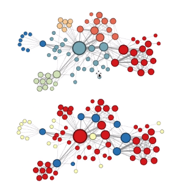
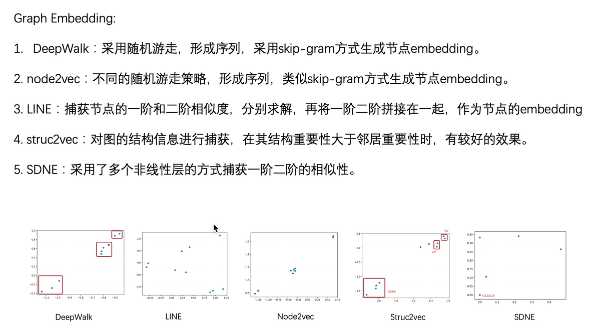
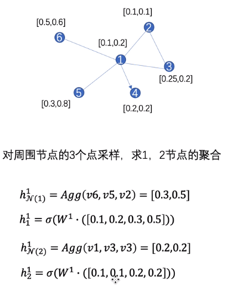
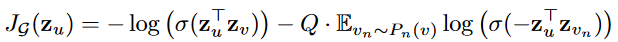
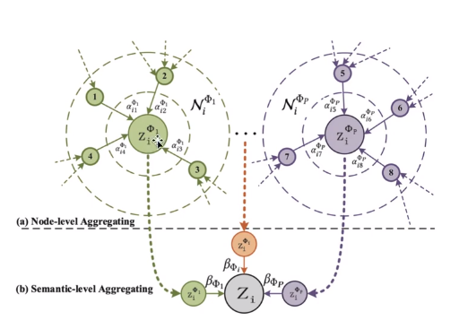
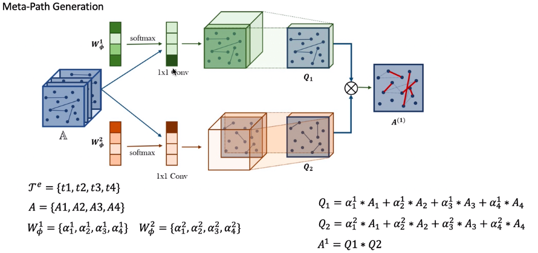
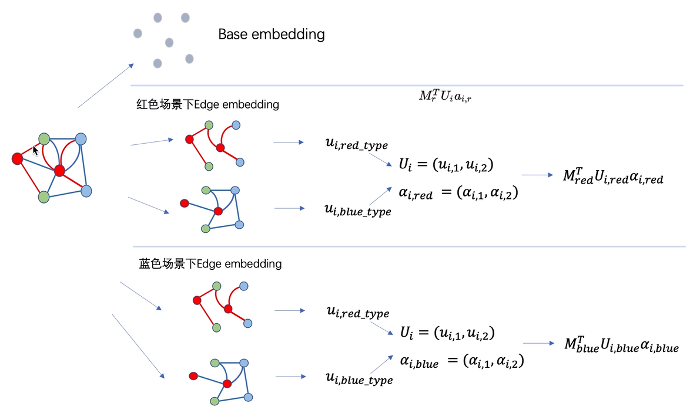
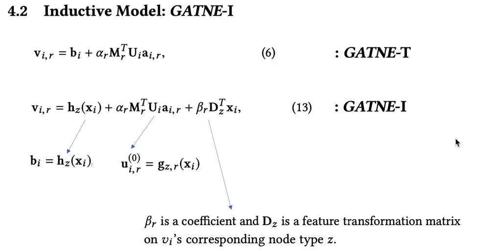

Graph embedding
2.1 deepwalk
从某个节点出发随机游走，得到若干个序列，用skip-gram计算每个节点的embedding信息
2.2 LINE
一阶相似性：直接相连的两节点相似
二阶相似性：有大量共同邻居的两个不相连节点相似
相似度高的节点会在embedding后有更短的欧氏距离
一阶和二阶直接拼接为节点的向量
2.3 Node2vec
有策略的随机游走
深度优先得到节点的社团相似性（上图）
广度优先得到节点的结构等价性（下图）

2.4 Struc2vec
计算节点n阶邻居度的序列，
求两序列的相似度
得到两节点的结构相似性
2.5 SDNE
采用多个非线性层捕获一阶二阶相似性
总结

两类学习
- 归纳学习（Inductive Learning）： 先从训练样本中学习到一定的模式，然后利用其对测试样本进行预测（即首先从特殊到一般，然后再从一般到特殊），这类模型如常见的贝叶斯模型。
- 直推学习（Transductive Learning）： 先观察特定的训练样本，然后对特定的测试样本做出预测（从特殊到特殊），这类模型如k近邻、SVM等。
GCN
- GCN的基本思想： 把一个节点在图中的高纬度邻接信息降维到一个低维的向量表示。
- GCN的优点： 可以捕捉graph的全局信息，从而很好地表示node的特征。
- GCN的缺点： Transductive learning的方式，需要把所有节点都参与训练才能得到node embedding，无法快速得到新node的embedding。
常用字母对应:
| 名称 | 字母 |
|---|---|
| 度矩阵（对角阵） | D |
| 邻接矩阵（01阵） | A |
$$
\tilde{A}=A+I_N
$$
$$
\tilde{D}=D+I_N
$$
$$
H^{(l+1)}=\sigma(\tilde{D}^{-\frac{1}{2}}\tilde{A}\tilde{D}^{-\frac{1}{2}}H^{(l)}W^{(l)})
$$
$\tilde{A}H$聚合了节点自身和邻居的信息，$\tilde{D}^{-\frac{1}{2}}$起到归一化的作用。
归一化之后的$\tilde{A}$ 可记为：
$$
\hat{A}=\tilde{D}^{-\frac{1}{2}}\tilde{A}\tilde{D}^{-\frac{1}{2}}
$$
训练方式
端到端
$$
Z=f(X,A)=softmax(\hat{A},ReLU(\hat{A}HW^{(0)})W^{(1)})
$$
嵌入+MLP
GraphSAGE
思想：学习一个节点的信息是怎么通过其邻居节点的特征聚合而来的
$$
h^k_{N(v)}=Agg({h^{k-1}_u},\forall u\in N(v))
$$
$$
h_v^k=\sigma(W^k \cdot Concat(h^{k-1}v,h^k{N(v)}) )
$$
$N(v)$表示节点 $v$ 的邻居节点集合，$Agg$()表示某个聚合函数。$k$代表层数。每一轮结束后进行归一化：
$$
h_v^k=h_v^k/\Vert h_v^k \Vert _2
$$
邻居采样
if len(neighbors) >= self.max_degree:
neighbors=np.random.choice(neighbors, self.max_degree, replace=False)
# 数量不足将有放回的采样
elif len(neighbors) < self.max_degree:
neighbors=np.random.choice(neighbors, self.max_degree, replace=True)
聚合函数
需要满足输入排列不变性，如
- Mean()
- GCN aggregator 比mean()多算一个自身特征
- LSTM
- Pooling
$$
Agg_k^{pool}=max({ \sigma(Wh_u^k+b)})
$$
Minibatch
即先采样把不需要用到的节点删除
损失函数
让临近的节点拥有相似的表示，反之应该表示大不相同

GAT
$$
\alpha_{ij}=\frac{exp(LeakyReLu(\vec a^T[\boldsymbol W\vec h_i\Vert \boldsymbol W\vec h_j ]))}{\sum _{k \in N_i}exp(LeakyReLu(\vec a^T[\boldsymbol W\vec h_i\Vert \boldsymbol W \vec h_k ]))}
$$
相当于在聚合前计算了权重。如果$\vec a$是全1向量，那么这个权重就由邻居节点各自的特征值大小决定。
$$
\vec h_i^\prime=\sigma\left(\sum_{j\in N_i}\alpha_{ij} \boldsymbol W\vec h_j\right)
$$
multi-head attention
$$
\vec h_i^\prime=\sigma\left(\sum_{j\in N_i}\alpha_{ij}^k \boldsymbol W^k\vec h_j\right)
$$
PATCH-SAN
HAN
异构图：节点和边的类型之和大于2
元路径：按照某种类型pattern的路径（有向），不同的元路径揭示了不同的语义信息
基于元路径的邻居：以某种元路径连接到节点i的所有节点
所以，在根据元路径邻居分配注意力的时候，可以依据不同类型的元路径分配权重

Node-level Attention
根据某一类型元路径，异构图转为同构图
类似于GAT
$$
e_{ij}^\Phi=att_{node}(h^\prime_i,h^\prime_j;\Phi)
$$
$$
\alpha_{ij}^\Phi=softmax(e_{ij}^\Phi)
$$
$$
z_{i}^\Phi=\sigma(\sum_{j \in{\mathcal {N}}i^\Phi}\alpha{ij}^\Phi \cdot h^\prime_j)
$$Semantic-level Attention
$$
w_{\Phi_i}=\frac{1}{|{\mathcal{V}}|} \sum_{i\in{\mathcal{V}}}q^T\cdot\tanh(W\cdot z_i^\Phi+b)
$$
$$
\beta_{\Phi_i}=\frac{exp(w_{\Phi_i})}{\sum_{i=1}^Pexp(w_{\Phi_i})}
$$
$$
Z=\sum_{i=1}^{P}\beta_{\Phi_i}\cdot Z_{\Phi_i}
$$GTN

用$D^{-1}Q_1Q_2$归一化
为了保留图本身的性质，给点边关系集增加一个单位阵$I$这样和A相乘时还是A。
矩阵相乘后去掉对角线
metapath2vec
元路径随机游走
对称的元路径效果更好
$$
p(v^{i+1}|v_t^i,{\mathcal{P}})=
\begin{cases}
\frac{1}{|N_{t+1}(v_t^i)|}, & \text{$(v^{i+1},v^i)\in E,\phi(v^{i+1})=t+1$}\[2ex]
0, & \text{other situation}\
\end{cases}
$$
上述公式表明，在游走到某节点$v_t$的情况下，下一节点在满足一下两个条件的节点中等概率选择：和节点$v_t$有边连接
是元路径规定的下一个节点的类型
获得随机游走序列之后，和deepwalk一样输入skip-gram模型训练
GATNE
- 相比metapath2vec，增加了边类型不同的情况
- base-embedding+edge-embedding
用函数逼近器得到归纳学习的效果
BiNE
给显式和隐式关系分别赋予不同的权重。
显式关系：直接的连边，A-B或A-A
隐式关系：共同邻居，类似于元路径的A-B-A